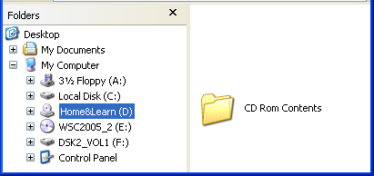
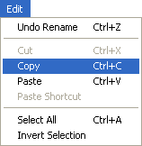
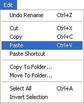

Free
computer Tutorials
|
Free
computer Tutorials
|
|
 home home |
Stay at Home and Learn | ||||
Copying from a CD to a Hard Drive in Windows XP
In this lesson, you'll see how to copy the files from a CD over to your own hard drive. Files load a lot quicker when they are on your own computer comapred to a CD. And you won't have to keep inserting the CD every time you need something from it.
The folder we will be copying is called CD Rom Contents. Inside this folder there are more folders and files that are needed for the courses. When we copy the "CD Rom Contents" folder we will automatically copy all the folders inside this one. In other word, copy one folder and you copy everything inside it. To copy the contents of a CD Rom to your own hard drive, then, do the
following:
 In the Image above, the CD Rom Drive letter is D. Clicking on the Drive letter displays the contents of the Drive in the right hand pane. The folder CD Rom Contents is displayed.

 To check that all the folders have been copied over correctly, double click the "CD Rom Contents" folder on your hard drive. And that's it. Quite easy, once you get the hang of it! You can use the same method to transfer files from a floppy disk in the Floppy Drive (which is the A drive) to your hard drive. We'll now move on to finding files and folders that have gone missing.
<--Back One Page Move on to the Next Part--> |
|||||
|